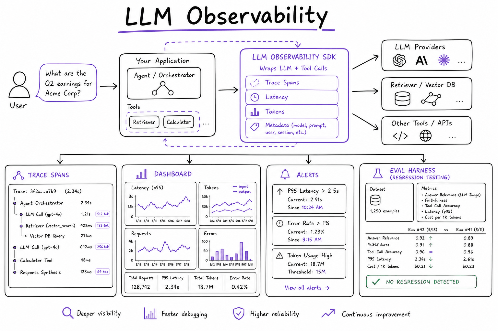
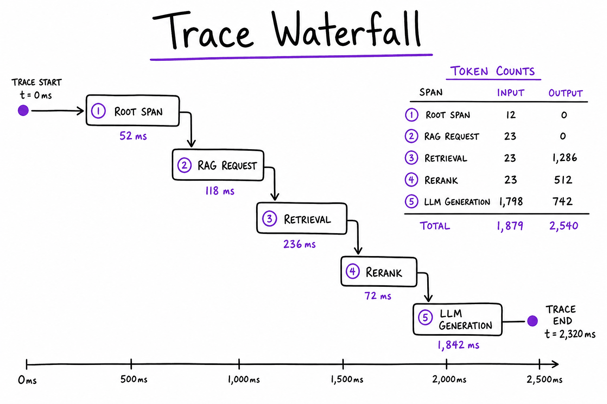
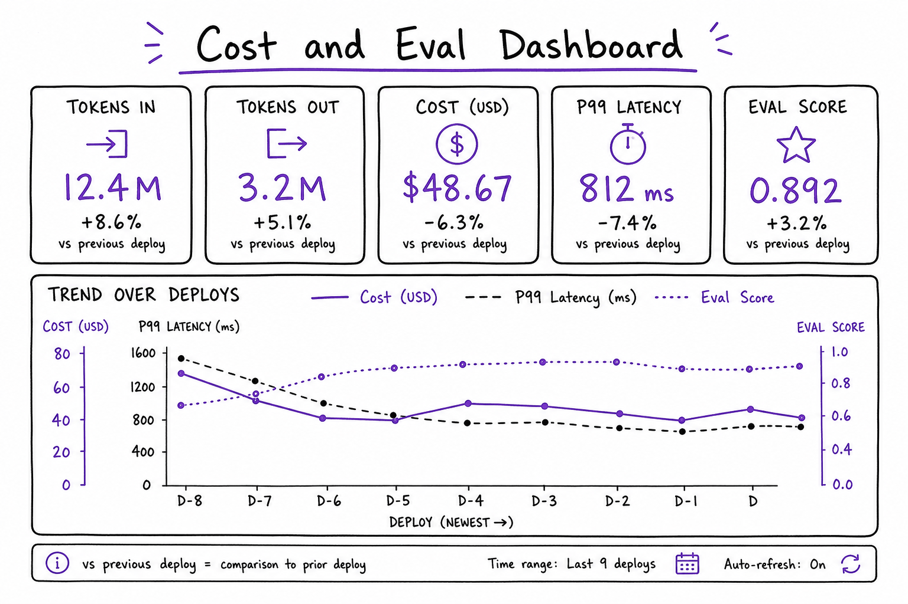

LLM Observability // AI Tech
Trace, evaluate, and debug LLM applications: LangSmith tracing patterns, Langfuse, OpenTelemetry GenAI spans, token and cost tracking, golden-set eval CI, online feedback loops, and production dashboards for RAG and agents.

Observability stack: SDK wraps LLM / retriever / tool calls → trace spans (latency, tokens, I/O) → dashboard + alerts → eval harness regression gate on every deploy.
01 — What & Why
LLM apps fail silently: wrong retrieval, prompt drift, tool loops, partial answers that look fine. Traditional APM misses prompt inputs, chunk IDs, and token costs. LLM observability = traces (what happened step-by-step), evals (is quality still good), metrics (cost/latency per tenant). Required before any prod RAG or LangGraph agent launch.
Functional requirements
- Trace tree per user request: embed, retrieve, rerank, LLM, tools
- Capture inputs/outputs with PII redaction policy
- Aggregate token usage and $ cost per model/feature/tenant
- Run golden-set eval on CI deploy; block if score drops >5%
- Collect online feedback (thumbs down) into review queue
Non-functional requirements
- Overhead: <5% latency added by tracing SDK
- Retention: 30–90 days traces; PII scrubbed at ingest
- Scale: sample success traces at high QPS; 100% errors
- Privacy: GDPR delete by user_id; no secrets in spans
01a — Core Concepts
| Term | Definition | Gotcha |
|---|---|---|
| Trace | Tree of spans for one end-user request | Must include retrieval + LLM + tools |
| Span | Single operation with start/end, I/O, metadata | Tag prompt_version, model, tenant |
| Run (LangSmith) | One invocation logged to LangSmith | Auto for LangChain/LangGraph with env vars |
| Golden set | Labeled Q&A for regression eval | Update quarterly from prod failures |
| LLM-as-judge | Model grades answer vs reference | Fast but biased; calibrate with humans |
| Feedback loop | Thumbs down → dataset → eval / fine-tune | Close loop or quality stagnates |
| Sample rate | Fraction of success traces stored | 100% errors; 5–20% success at scale |
01b — API / Interface Surface
# LangSmith — auto-trace LangChain / LangGraph
import os
os.environ["LANGCHAIN_TRACING_V2"] = "true"
os.environ["LANGCHAIN_API_KEY"] = "lsv2_..."
os.environ["LANGCHAIN_PROJECT"] = "rag-prod"
# Manual run logging
from langsmith import traceable
@traceable(name="rag_pipeline", metadata={"tenant": "acme"})
def answer(query: str) -> str:
docs = retrieve(query) # child span auto
return generate(query, docs)
# Langfuse decorator
from langfuse.decorators import observe, langfuse_context
@observe()
def rag_pipeline(query: str):
langfuse_context.update_current_trace(user_id="hash-123")
...
# OpenTelemetry custom span
with tracer.start_as_current_span("rerank") as span:
span.set_attribute("gen_ai.request.model", "bge-reranker")
span.set_attribute("retrieve.k", 50)
results = reranker.rank(query, docs)02 — When to Use / When NOT
| Case | Obs stack? | Minimum |
|---|---|---|
| Prod RAG or agent | Required | Langfuse or LangSmith + golden CI |
| Staging / load test | Yes | Trace + cost dashboard |
| One-off notebook | Optional | Print debugging OK |
| Batch offline eval only | Eval harness | No live tracing needed |
03 — Architecture
App (FastAPI / LC / LangGraph)
|
v
+-------------+
| OTel / SDK | LangSmith / Langfuse client
+------+------+
|
v
+-------------+
| Collector | batch export
+------+------+
|
+-----+-----+
v v
+---------+ +---------+
| Storage | | UI | traces, prompts, datasets
| CH/PG | |Dashboard|
+---------+ +---------+
|
v
+---------+
| Eval CI | golden set on deploy
+---------+04 — Tracing & LangSmith Patterns

Trace waterfall: root span RAG request 850 ms → embed 15 ms → vector DB 25 ms → rerank 65 ms → LLM generate 720 ms (prompt=2400, completion=180 tokens).
LangSmith patterns for RAG
- Project per env:
rag-dev,rag-staging,rag-prod - Metadata tags:
tenant_id,prompt_version,embed_model,chunk_ids - Datasets: upload golden Q&A; run evaluators on every PR
- Evaluators: correctness (LLM judge), recall@k (custom), latency threshold
- LangGraph: each node name appears as span — map to graph diagram
# LangSmith eval on dataset
from langsmith.evaluation import evaluate
def correctness(run, example):
return llm_judge(run.outputs["answer"], example.outputs["reference"])
evaluate(
answer, # your pipeline
data="golden-rag-v3",
evaluators=[correctness],
experiment_prefix="deploy-2026-05-30",
)
LangSmith is deepest integrated with LangChain/LangGraph. Langfuse offers OSS self-host for cost-sensitive scale. Both support OpenTelemetry export.
05 — Cost Tracking

Dashboard panels: tokens in/out per model, daily cost USD, p99 latency trend, eval score over deploys (drop on bad deploy, recovery after rollback).
# Per-span cost attribution
prompt_tokens = usage.prompt_tokens
completion_tokens = usage.completion_tokens
cost_usd = (
prompt_tokens * PRICE[model]["input"]
+ completion_tokens * PRICE[model]["output"]
)
span.set_attribute("gen_ai.usage.cost_usd", cost_usd)
span.set_attribute("tenant_id", tenant)
| Metric | Alert threshold |
|---|---|
| Daily spend per tenant | 2× 7-day moving average |
| Tokens per successful answer | Spike >50% (prompt bloat) |
| Retrieve+LLM cost ratio | LLM >90% — tune chunk count |
06 — Eval Harness Integration
Connect live traces to offline eval. See Eval Harness for full CI design.
- Golden 50–100 questions with reference answers and gold doc IDs
- Blocking CI: deploy fails if recall@5 or correctness drops >5%
- LLM-as-judge: fast regression signal; calibrate 10% with human labels
- Latency regression: p99 retrieve+generate < SLA on synthetic load
- Compare experiments: LangSmith side-by-side two prompt versions
# Minimal CI gate (pseudo) score = run_golden_eval(pipeline, "golden-v3") assert score["recall_at_5"] >= BASELINE * 0.95 assert score["correctness"] >= BASELINE * 0.95
07 — Online Feedback Loop
User thumbs down + optional correction
|
v
Review queue (human)
|
+----+----+
v v
Golden set Fine-tune dataset
update (advanced)
- Store
trace_idon every UI response for support tickets - Link feedback to LangSmith run URL for instant replay
- Weekly triage: add failure modes to golden set
08 — Tools Comparison
| Tool | Strength | Best for |
|---|---|---|
| LangSmith | LangChain/LangGraph native, datasets, evaluators | LC/LG shops; hosted convenience |
| Langfuse | OSS, self-host, prompt versioning, cost | Cost at scale; data residency |
| Arize Phoenix | Embedding viz, retrieval cluster debug | RAG retrieval quality debug |
| Helicone | OpenAI proxy logging, cost gateway | Quick cost wrap on API calls |
| OpenTelemetry | Vendor-neutral spans; Datadog/Jaeger export | Unified APM + LLM spans |
09 — Full Instrumentation Example
Instrument a RAG pipeline with LangSmith patterns: nested spans, metadata tags, and eval-ready outputs.
import os
import uuid
from langsmith import traceable
from langsmith.run_helpers import get_current_run_tree
os.environ["LANGCHAIN_TRACING_V2"] = "true"
os.environ["LANGCHAIN_PROJECT"] = "rag-prod"
@traceable(name="rag_answer", metadata={"pipeline": "v3"})
def rag_answer(query: str, tenant_id: str) -> dict:
trace_id = str(uuid.uuid4())
run = get_current_run_tree()
if run:
run.extra = {"tenant_id": tenant_id, "trace_id": trace_id}
chunks = retrieve(query) # child span: embed + vector DB
ranked = rerank(query, chunks) # child span: scores logged
answer = generate(query, ranked) # child span: tokens + model
return {
"answer": answer,
"trace_id": trace_id,
"chunk_ids": [c["id"] for c in ranked],
}
# Attach feedback from UI
# langsmith_client.create_feedback(run_id, key="user_score", score=0)
# CI eval (blocking deploy)
# evaluate(rag_answer, data="golden-rag-v3", evaluators=[correctness])
Store trace_id on every API response. Support tickets link directly to LangSmith run replay. Feed thumbs-down into golden dataset per Eval Harness.
10 — Production & Ops
| Concern | Practice |
|---|---|
| PII | Regex scrub emails/SSN; hash user_id; never log API keys |
| Sampling | 100% errors + 10% success; always aggregate metrics |
| Retention | 30 days traces; GDPR delete API |
| Alerts | Eval drop, error spike, cost anomaly, p99 latency |
| Incident | trace_id in tickets; rollback on eval gate failure |
11 — Where It Shows Up
- RAG End-to-End — trace every retrieve → rerank → generate stage
- Vector Databases — log chunk IDs + ANN scores in retrieval span
- LangGraph — per-node spans + checkpoint metadata
- OpenAI API Patterns — token usage + retry logging
- Eval Harness — CI golden set fed from prod failures
- Production Agent — tool loop detection, HITL audit trail
12 — Common Pitfalls
- Log full prompts with PII/secrets — scrub at SDK boundary
- No eval CI — silent regressions on prompt/model deploy
- Traces without retrieval spans — cannot debug RAG misses
- LangSmith only in prod — staging should mirror for pre-release eval
- Ignore cost metrics — prompt bloat discovered at invoice time
- No trace_id in UI — support cannot replay failures
13 — Interview Q&A
What should you trace in a RAG pipeline?
LangSmith vs Langfuse?
Key LangSmith patterns for production?
OpenTelemetry for LLMs?
How track LLM cost per tenant?
Golden set size and update cadence?
LLM-as-judge pitfalls?
Debug bad retrieval with traces?
PII handling in traces?
Sampling strategy at 10K QPS?
Agent loop observability?
SDE3: company AI observability platform?
Learn it in full
The Production & evals topics, with worked examples, code and exercises.
- Reference architectures — A production agent end to end, and architectures by use case.
- Reliability engineering — Surviving flaky models and APIs: retries, fallbacks, timeouts, idempotency.
- Evaluating LLM features — Success criteria, golden sets, graders, LLM-as-judge, statistics, CI gates, online evaluation and error analysis.
- Observability — Seeing inside a twelve-step agent: traces, spans, metrics and what to alert on.
- Security — How agents expand the attack surface, and the defences that hold.
- Cost & performance — Where the money goes, and caching, routing and batching to cut it.
- Hybrid LLM patterns — LLM extracts and code decides, routing and cascades, LLMs with classic ML, guardrails, text-to-SQL.
- MLOps & drift — Version everything that changes behaviour, and notice when the world moves.